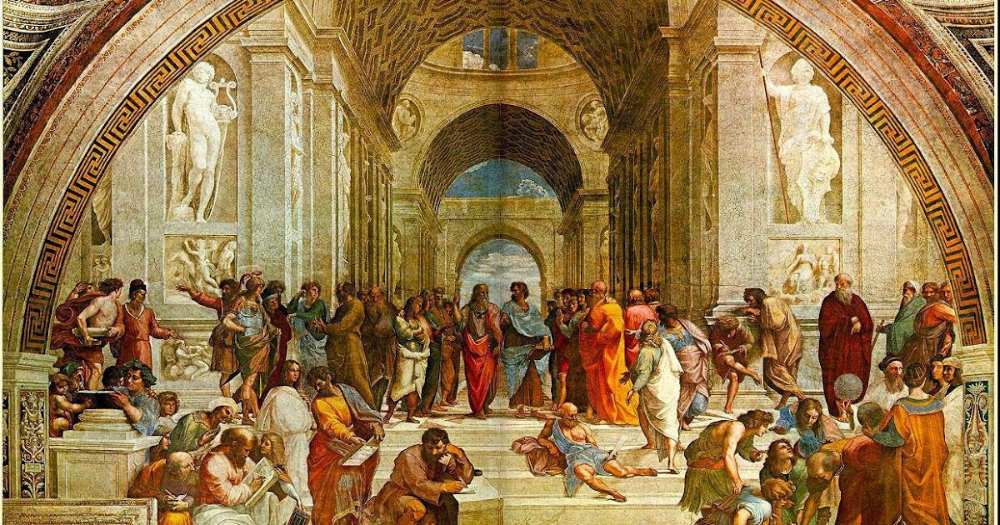

ยุคกลาง

คำอธิบาย:มีช่วงระยะเวลายาวนานถึง 450 ปี แบ่งเพลงออกได้สองแบบ คือ เพื่อความบันเทิง และเพลงเกี่ยวกับศาสนา ซึ่งเพลงเกี่ยวกับศาสนายังมีทำนองเดียว แต่ยุคนี้เริ่มมีเสียงประสานอย่างง่ายที่เรียกว่า ออกานุม ขึ้นมา ในสมัยนี้นิยมเพลงร้องในพิธีเรียกว่า โมเท็ต และเพลงศาสนาเรียกว่า แมส โดยโมเท็ตจะมีท่วงทำนองที่สั้นกว่า โดยทั้งสองเพลงมีเนื้อร้องเป็นภาษาละติน เป็นที่นิยมมากในประเทศฝรั่งเศสและอิตาลี ยุคนี้เริ่มมีการบันทึกดนตรีในระบบโน้ตสากลแล้วโดยพระชาวอิตาลี ชื่อ กวิโด ดาเรซโซ ซึ่งเป็นต้นแบบของโน้ตตามที่เราใช้เรียนอยู่ในยุคปัจจุบัน และเริ่มใช้เครื่องดนตรีประเภท ลูต หรือ ซึง คลอตามเสียงร้อง